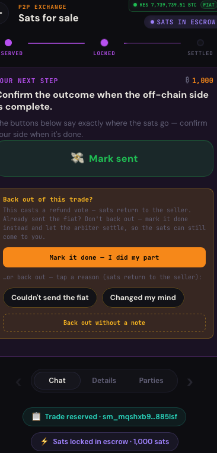
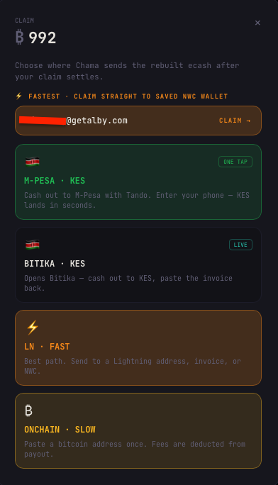
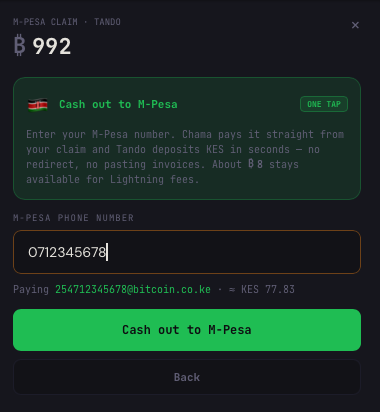

Trade with your community.
Trust the math, not a middleman.
New to Chama? This is everything you need, in plain language — how to buy, sell, get paid, cash out, and stay safe.
What Chama is
What is Chama?
A peer-to-peer marketplace. You can buy and sell Bitcoin, goods, and services with people in your community. Every trade is protected by an escrow that no company can freeze, seize, or switch off — because there is no company in the middle.
Do I need to know anything about Bitcoin?
No. You pick your country and currency, you trade, and (in supported countries) your money can land straight in your mobile-money account like M-Pesa. Bitcoin is the plumbing; you don't have to think about it.
Is Chama free? What does it cost?
The app is free to download, and Chama itself takes no cut — it's non-custodial, so no company sits between you and your money. On a completed trade, a small 0.5% insurance premium goes to the community arbiter who backs your trade (0.25% from each side), sent as ecash. It's included by default and you can turn it off before you settle. If a trade goes to an arbiter to settle a dispute, a small additional fee applies for that work. Sellers can also set their own premium on a listing (e.g. "+25%") — that's the seller's price, not a Chama fee — and you always see the final amount before you commit.
Does Chama hold my money?
No. Chama never touches your money. Your funds sit in a shared escrow only while a trade is active, and they move to you the moment the trade settles. Between trades, your balance is zero by design — there's no wallet for anyone to drain.
Set up & sign in
How do I get Chama?
- Android: install from Zapstore → zapstore.dev/apps/app.chama.market
- Web & desktop: open getchama.app (also at chama.community)
How do I sign in?
Chama uses a key as your account (the Nostr standard) — there's no email/password and no sign-up form. The app can create a key for you, or you can use your existing Nostr key. Write your key down and keep it safe (see "Back up your account" below) — it is your account.
What is a "community" and how do I choose one?
A community is your currency + country + flag — for example 🇰🇪 Kenya · KES, or 🇸🇳 Senegal · CFA. You pick yours the first time you sign in. It decides the currency your trades are priced in and the neighbours you trade with. You can switch communities later in Settings → Advanced, but you stay "home" by default. You can also peek at other communities while browsing.
How a trade works
How do I buy something?
- On Browse, tap a listing that interests you.
- Tap Join as Buyer to reserve your spot (nothing moves yet).
- Build your order / confirm the amount, then fund it — this locks your sats safely in escrow.
- Pay the seller's fiat (e.g. M-Pesa, Airtel) the way the listing says, or receive your goods.
- When you've got what you paid for, tap to release — the sats go to the seller. Done.
How do I sell something?
- Tap Create and post a listing (Exchange / Market goods / Community Bill Pay), set your price and which payment methods you accept.
- When a buyer joins and funds, the sats lock in escrow — you'll see "Sats locked in escrow."
- Deliver the goods / send the agreed fiat, then tap Mark delivered (or "Mark sent") — that's your confirmation.
- Once released, tap Claim to receive your sats — and cash out (see below).
What are the steps of a trade?
Reserved (someone joined) → Locked (sats funded into escrow) → the work happens (goods delivered / fiat sent) → Released (both sides agree) → Claim your payout → Settled. You can follow it on the trade's timeline, and chat with the other party at any time.
How does the escrow keep me safe?
When a trade is funded, the money is split so that two of the three people in the trade — you, your counterparty, and a community arbiter — must agree before it can move. No single person (and no company) can run off with it. Normally you and your counterparty simply agree and it settles; the arbiter only steps in if something goes wrong.
What is an arbiter?
A trusted member of your community who can help settle a trade only if there's a dispute. They can't take your money — they can only break a tie between buyer and seller. Arbiters build a reputation over time.
What if something goes wrong / I have a dispute?
If you and your counterparty disagree (e.g. goods never arrived), each of you casts your vote — release or refund — and explain why. If you clash, the arbiter is brought in to decide fairly. You're never left stuck.
How do I cancel or back out?
Before anything is funded, you can simply leave. After funding, backing out means casting a refund vote, which returns the sats to the right person (the arbiter is the backstop). Chama always shows you exactly where the money goes before you confirm.

Funding & cashing out
Where do the sats come from to fund a trade?
You fund with Bitcoin (sats) you already hold — for example from a Lightning wallet. Chama doesn't sell you Bitcoin inside the app. In a typical trade the cash side happens between you and your counterparty directly (you send them M-Pesa/Airtel as the listing says); Chama escrows the Bitcoin side.
How do I get paid / cash out?
When a trade is ready, tap Claim and choose where your money goes. Your options depend on your country:
- 🇰🇪 Kenya — Cash out to M-Pesa (one tap). Enter your M-Pesa number and Kenyan shillings land on your phone in seconds.
- Other countries — local partner. Where a cash-out partner exists (e.g. Banxaas in Senegal), Chama opens their page so you can cash out there. More partners are coming.
- Lightning, anywhere. Send to any Lightning address, invoice, or connected wallet (NWC).
- On-chain Bitcoin. Paste a Bitcoin address (slower; network fees apply).
How do I cash out to M-Pesa?
- On a completed trade, tap Claim.
- Choose Cash out to M-Pesa.
- Enter your M-Pesa phone number (it's saved for next time).
- Confirm — you'll see the approximate KES amount, and shillings arrive in seconds.


No app to install, no account, no Bitcoin knowledge needed. (This uses Tando, a standards-based Lightning → M-Pesa bridge.)
Heads-up — there's a per-transaction limit. M-Pesa cash-outs are capped per transfer; if your claim is over the limit, Chama shows you the maximum, so you can send a smaller amount or cash out over Lightning instead.
Can I pay into a trade with M-Pesa (cash, not Bitcoin)?
Not inside the app today. Cashing out to mobile money works in supported countries; cashing in (turning your mobile money into Bitcoin) is something you do beforehand with an outside service, or directly with your trading partner.
Keeping your money & account safe
Is my money safe?
Yes — your funds are protected by the two-of-three escrow and are only ever committed to a specific trade. Chama, and any "Chama" entity, cannot seize, freeze, or move them.
Back up your account (important!)
Your key is your account and your recovery path. If you lose your phone without a backup, you could lose access. So:
- When you sign in, save your key / recovery phrase somewhere safe and private (write it down offline; never share it).
- Anyone with your key controls your account — treat it like cash.
Is Chama private?
You don't give Chama an email, phone number, or ID to use it. Your identity is just your key. Be mindful that what you post publicly (listings, chat in a trade) is shared over the Nostr network.
Common questions
It says "Connecting…" or asks me to "Reconnect."
Chama talks to the network over relays. On a weak connection a few can drop — tap Reconnect, or give it a moment; it reconnects on its own. Your trades and funds are never lost while this happens.
I finished a trade but it says my claim "needs attention."
Usually your money already arrived and the app just couldn't auto-confirm it — check your balance or your wallet. Chama keeps a backup copy of the note either way, so nothing is lost. If it's genuinely missing, the saved note is your recovery path.
Funding or claiming failed.
Nothing moves unless it fully succeeds — a failed attempt means no sats were sent. Wait a moment and try again; if a route stays slow, tap Reconnect first. On a brand-new install, if a first join hangs, make sure you have a stable connection and retry.
Words you'll see
- Sats: the small unit of Bitcoin (1 Bitcoin = 100,000,000 sats). Prices in Chama show in your local currency too.
- Lightning: the fast, cheap Bitcoin payment network Chama uses to move sats.
- Escrow: a safe "holding" of funds during a trade, released only when the right people agree.
- Arbiter: a community member who can settle a disputed trade — never able to take your money.
- Key / npub: your account on Chama (and Nostr). Back it up.
- M-Pesa / Tando: mobile money (Kenya) and the bridge that turns your sats into M-Pesa cash.
Still need a hand?
Get the app: getchama.app · Android (Zapstore)
Follow Chama on Nostr →
or copy: npub1m7nypkfk259h5h0dqwj9px0pqq7nz0cs7gjdhr7g793wspskeavqrljsln